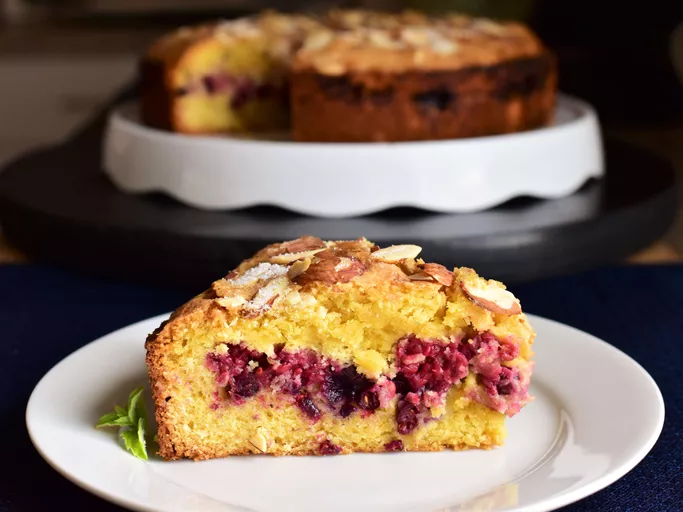

Mixed Berry Almond Cake

Desciption
Ingredients
- 1 cup white sugar
- 1 (7 ounce) package almond paste, grated through large holes of grater
- 10 tablespoons butter, melted
Recipe
- Preheat oven to 350 degrees F (175 degrees C). Grease and flour a 9-inch springform pan.
- Combine white sugar, almond paste, and butter in mixing bowl; beat with an electric hand mixer on medium speed until smooth. Add eggs one at a time, beating well after each addition. Beat on high for 3 minutes.
- Sift flour, baking powder, and salt into a separate bowl. Add flour mixture to almond paste mixture and beat until just combined. Pour 2 1/4 cups of batter into prepared pan, gently smoothing to edges. Arrange blueberries and raspberries atop the batter layer; top with remaining batter. Sprinkle almonds over the batter